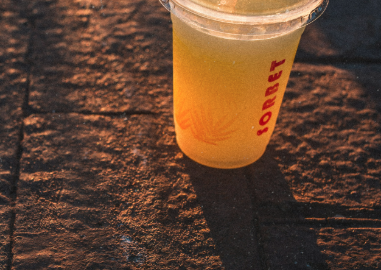
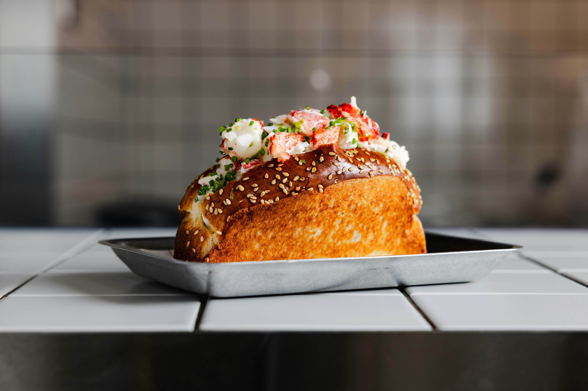

Recent work
A few things I've shipped

Philly Water Ice
Getting the word out
A marketing site built to bring a beloved Philly staple to a wider online audience.
View the site
Slack Tide Lobster Shack
Roll or steamed
A restaurant site built to bring the shack's menu and story online for locals and visitors alike.
View the site
Japanese Women's Leadership Institute
A history worth sharing
A content site built to share the history and purpose of the JWLI with a broader audience.
View the site